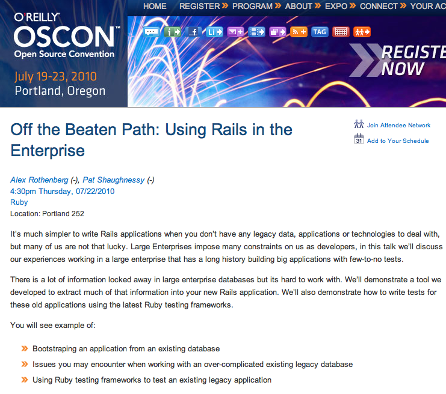
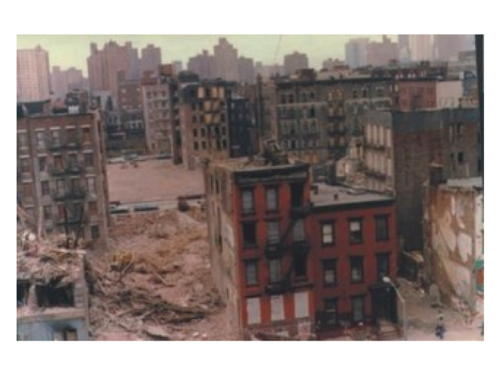
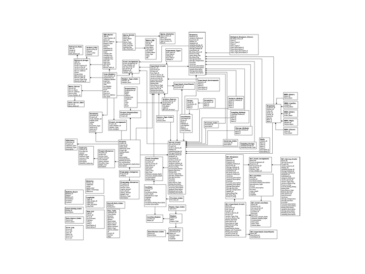
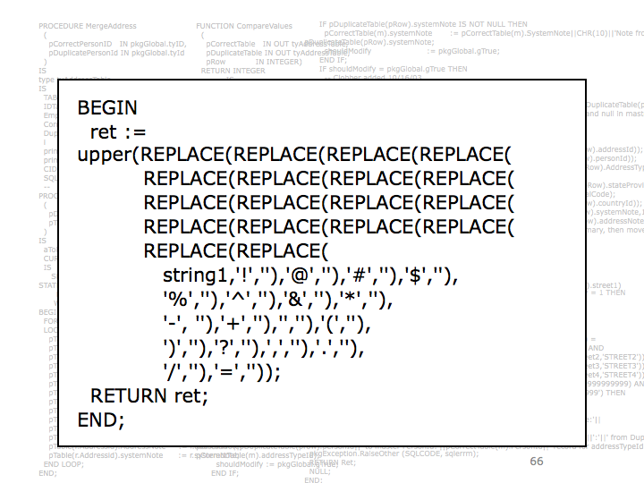

Off the Beaten Path
Using Rails in the Enterprise
PLAY ▶




Database Server On Your Laptop
Migration Zero
Document Legacy Database
Behaviors in Rails Code
Consider Using a View to
Simplify Legacy Schema
Remove and Test Application
Code Hidden in Database
The End